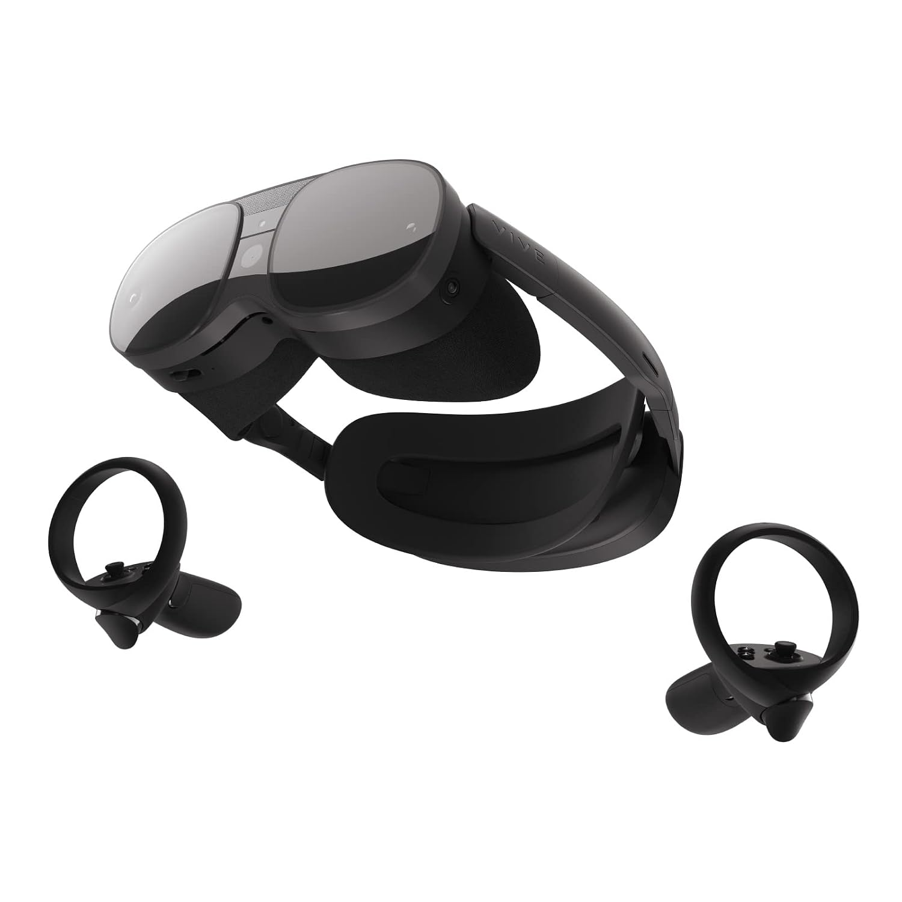

REDEFINING IMMERSIVE ENTERTAINMENT
Fast, high-fidelity virtual reality hardware engineered around pure performance and uncompromising user privacy.

Censoor is a virtual reality (VR) gaming and entertainment enterprise focused on delivering ultra-fast, highly responsive simulated environments through cutting-edge visual and acoustic engineering. We build hardware that connects users directly to high-intensity virtual worlds without subjecting their behavioral, optical, or personal interaction data to commercial monetization.